ようこそ
「Paso（パソ）」には、"一歩ずつ" という願いを込めています。できることが少しずつ増えていく、その歩みを大切にしたい。私たちは、子ども一人ひとりの「好き」や「できた！」に寄り添いながら、ゆっくり、でも着実な成長を見守ります。
※ごあいさつ本文は原稿差し込み予定です。
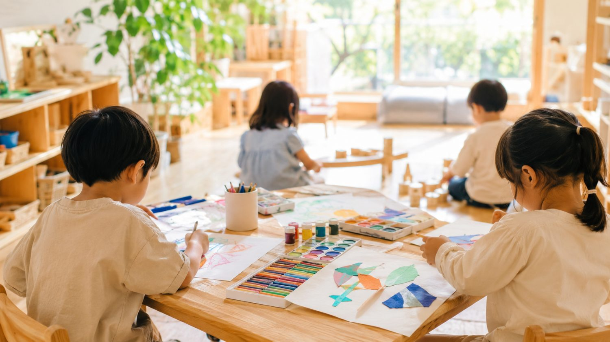
施設について
放課後等デイサービスは、児童福祉法にもとづき、発達障害や知的障害のあるお子さんが、学校が終わったあとや学校がお休みの日を安心して過ごせるようにする福祉サービスです（ご利用には受給者証が必要です）。「Paso（パソ）・はなこま」は、そんな放課後の時間を、それぞれのペースに合わせて過ごせる場所にしたいという思いから生まれました。ついたら、まずスタッフといっしょに今日やることを確認。個別の活動から、その日の集団活動へ。過ごし方の流れが決まっているから、子どもたちは見通しをもって安心して過ごせます。
プログラム
「できた！」の達成感を大切に、日替わりで取り組みます。
イーゼルを使った絵の具や土粘土など、本格的な画材で自由に表現するアートの時間。集中力や想像力、手先の使い方を育みながら、ひとつの作品ができあがる達成感を、いっしょに味わいます。
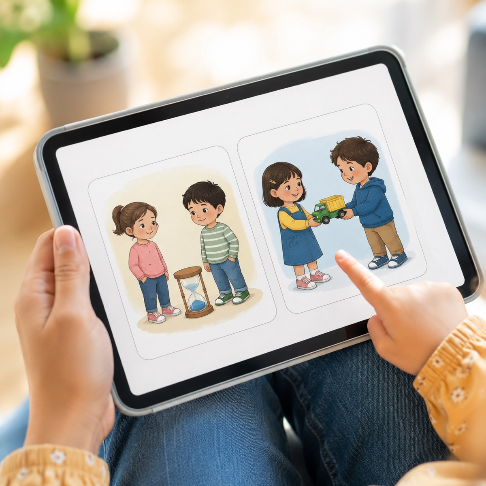
ボードゲームや積み木遊びなどを通して、「じゅんばん」「かして」といったお友だちとのやりとりを、やさしく練習します。絵カードで確認しながら、気持ちを切り替える力や対人関係の基礎を、遊びのなかでゆっくり育みます。
Nintendo Switchやタブレットなどを使って、お友だちと楽しく交流する時間です。勝ち負けだけでなく、順番を守る・相手に合わせるといった、思いやりの気持ちや対人関係を育みます。
アートタウンプロジェクト
創作活動（アート）のプログラムは、三重県内で子ども・若者向けのアート活動を行うNPO法人アートタウンプロジェクトと連携して行っています。2022年5月から、県内各地で子どもたちのアート体験の場をつくってきた団体で、アート教室 parasol（津市栗真町屋町）を拠点に、水彩画・粘土・工作・アクセサリー作りなど、さまざまな創作活動を行っています。季節ごとの「春・夏・冬のアート体験」イベントや、地域の企業・団体と協働したイベントなど、三重県内のいろいろな場所で子どもたちのアート体験の場をつくってきた実績があります。Pasoでも、その経験を活かしたプログラムを取り入れています。
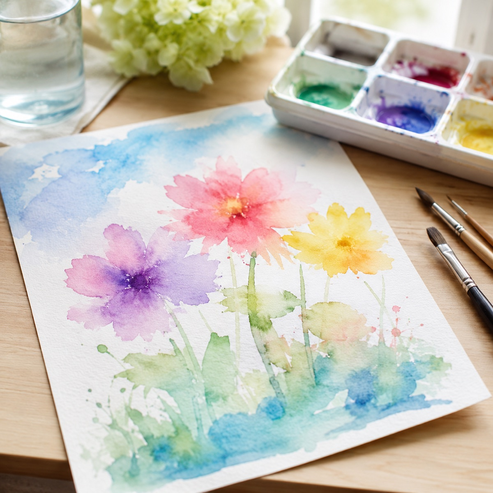
NPO法人アートタウンプロジェクト代表。アートを通じて地域の子ども・若者がつながる場づくりに取り組み、Pasoの創作活動（アート）プログラムの監修を担当。
見通しを支える工夫
Pasoでは、iPad（タブレット）で活動の手順を先に見てから取り組める工夫を取り入れています。「見て分かる」手順があることで、はじめての活動でも次に何をするのかが分かり、お子さんが見通しをもって安心して活動に入れます。ことばの説明だけでは分かりにくいお子さんも、動画なら自分のペースで何度でも確かめられます。この工夫でお子さんの取り組みや安心感がどう変わるかを、三重大学との共同研究として、現場のみなさんと一緒に丁寧に確かめています。
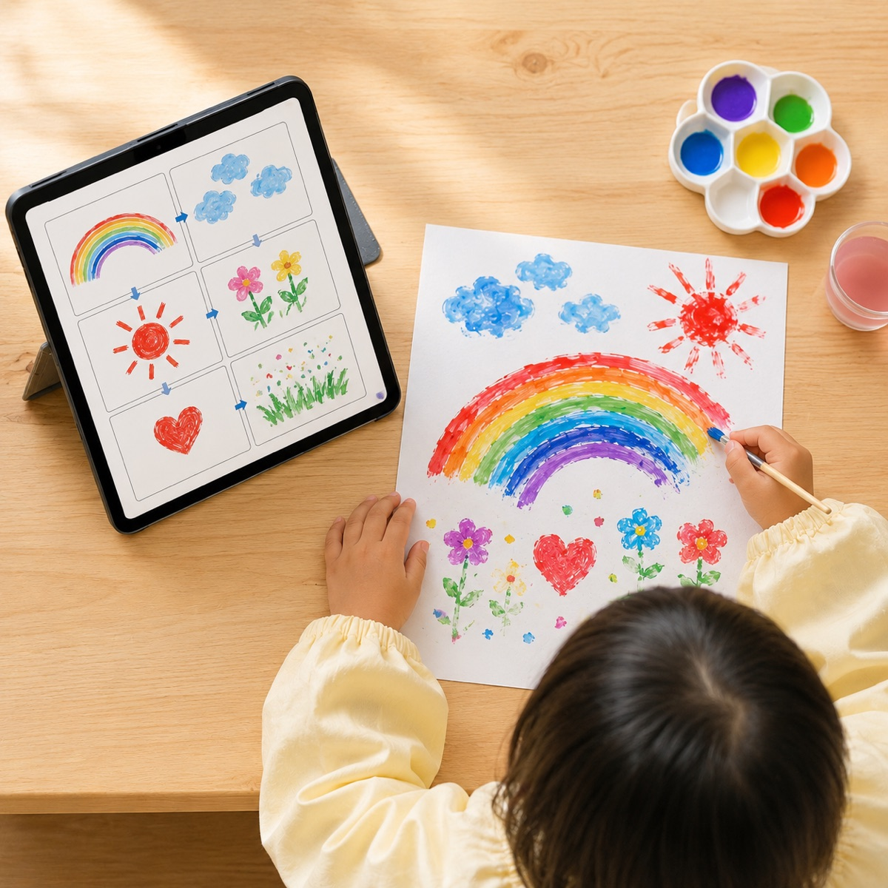
特別支援教育・教育情報学が専門。ICTを活用した教材づくりや、支援の効果を確かめる研究に取り組んでいます。この手順資料の作り方や活かし方を、パソの現場のみなさんと一緒に考えています。
共同研究
三重大学教育学部と、視聴覚教材（iPad手順資料）を活用したアート・SSTプログラムの効果について、共同研究を実施しています。
共同研究課題
三重大学教育学部 森 浩平 × 社会福祉法人 洗心福祉会「Paso（パソ）・はなこま」
産学連携
Pasoのプログラムは、三重大学との共同研究の成果をもとに、産学連携認定プログラムとして登録されています。NPO法人アートタウンプロジェクトとの連携によるアート活動と、大学と共に確かめてきたICTの見通し支援を組み合わせた、安心してご利用いただけるプログラムです。
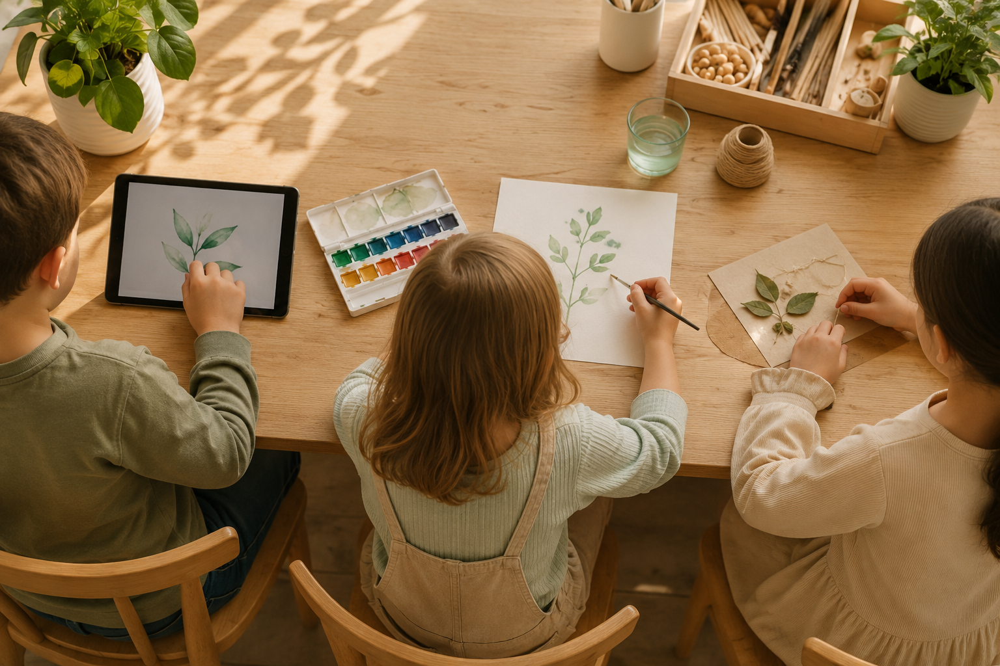
「三重大学と共同研究を実施しています」
※ロゴの使用には三重大学の使用許可申請（許諾手続き）が必要です。
一人ひとりに合わせて
音や光に敏感なお子さんが多いことをふまえ、パーテーションやイヤマフで刺激をやわらげる工夫をしています。疲れたときや気持ちを切り替えたいときには、いつでもひと息つける「リフレッシュスペース」もあります。対象は発達障害・知的障害のあるお子さんで、程度を問わず幅広く受け入れています。「みんなと同じことを、同じペースで」ではなく、その子に合った関わり方やペースを、職員みんなで考えながら支援していきます。
1日の流れ
※時間はおおよその目安です。当日の活動により前後することがあります。
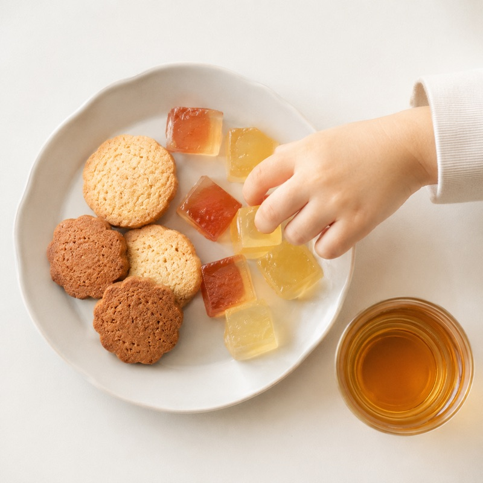
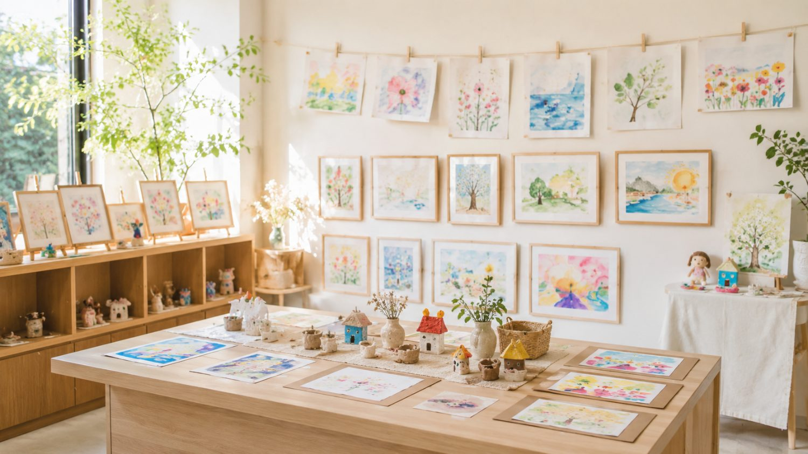
作品
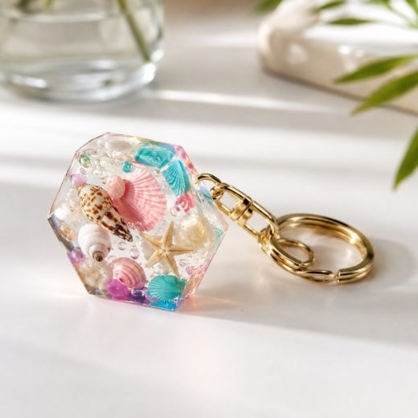
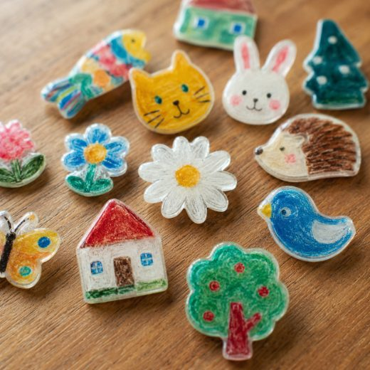
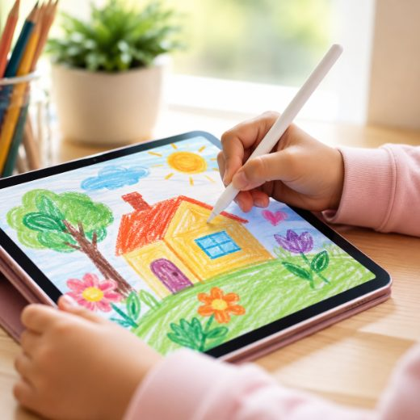
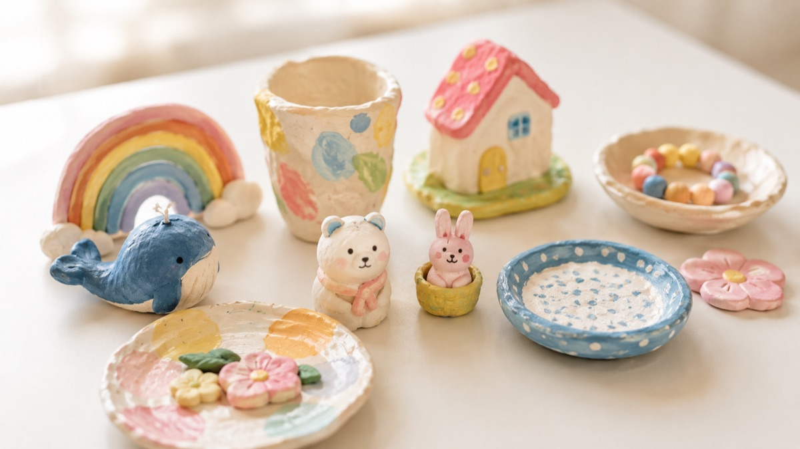
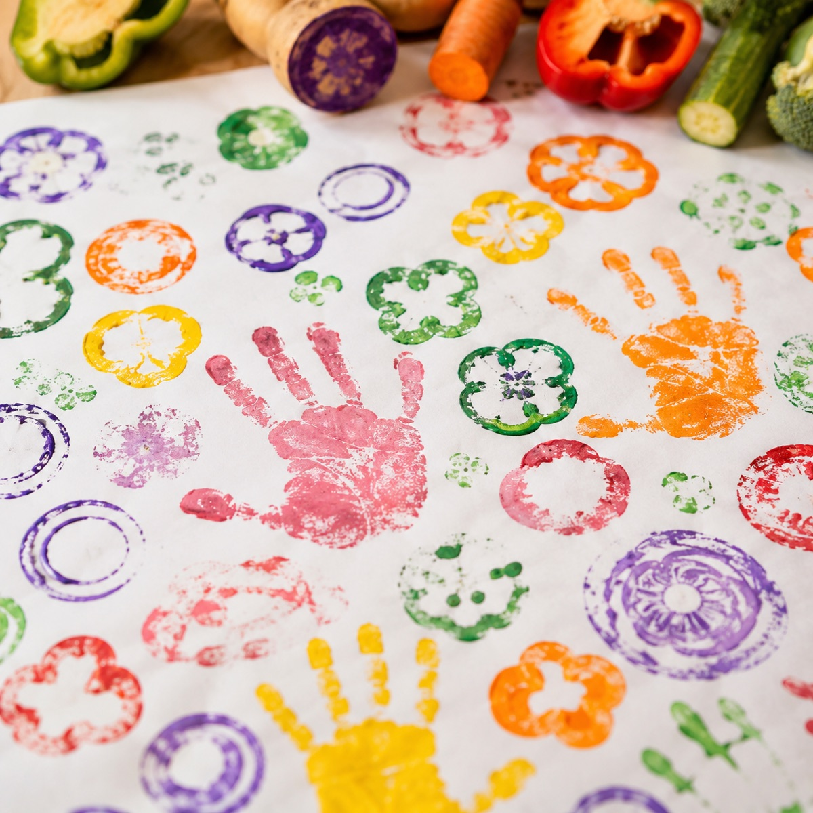
ご利用案内
アクセス
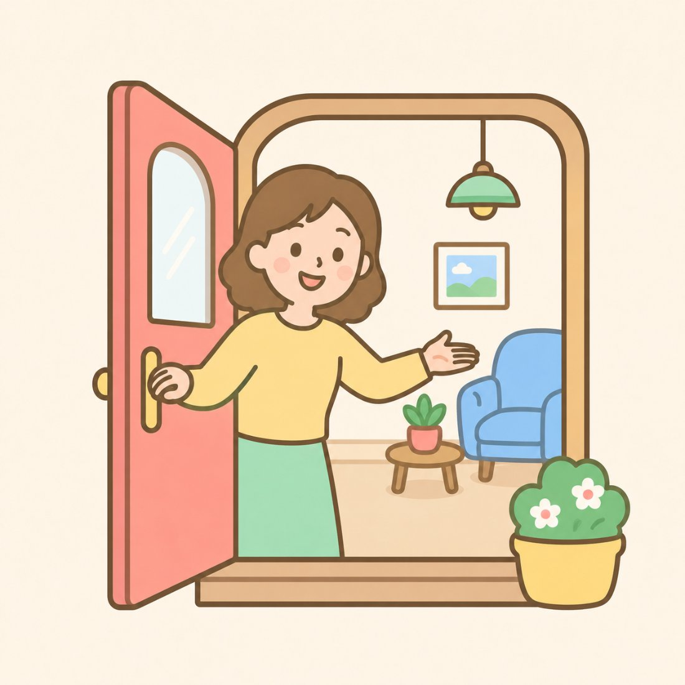
正確な住所・地図は確定後に掲載します。上の地図はイメージです。